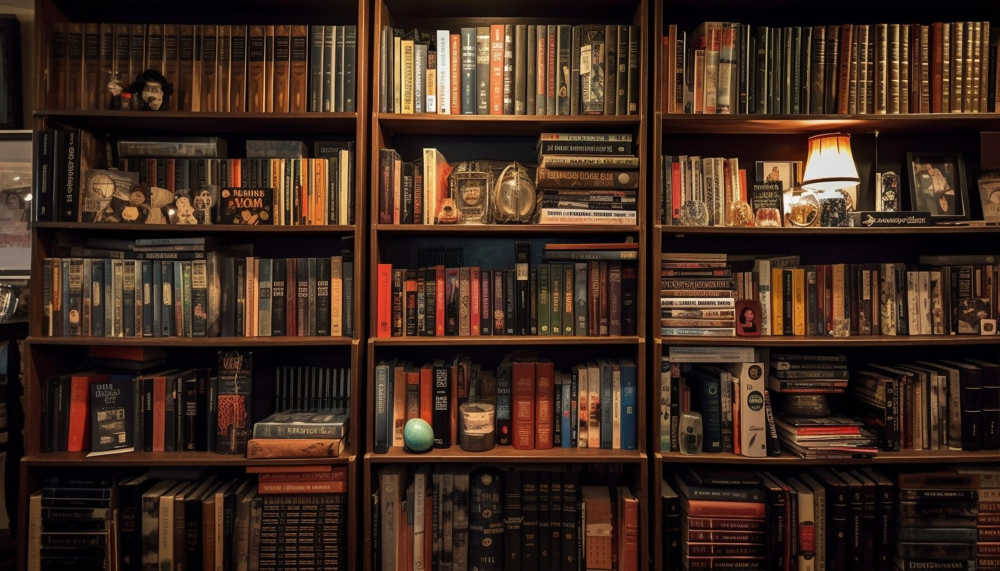
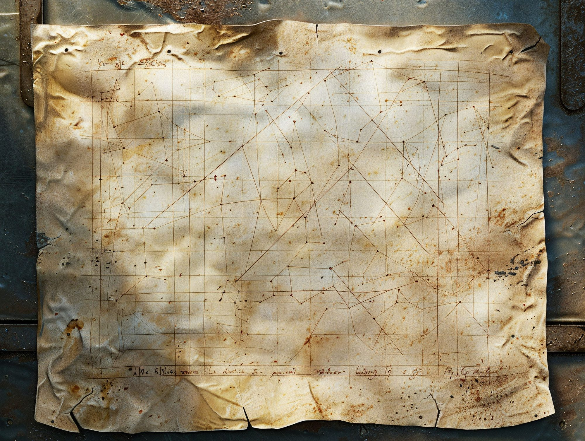
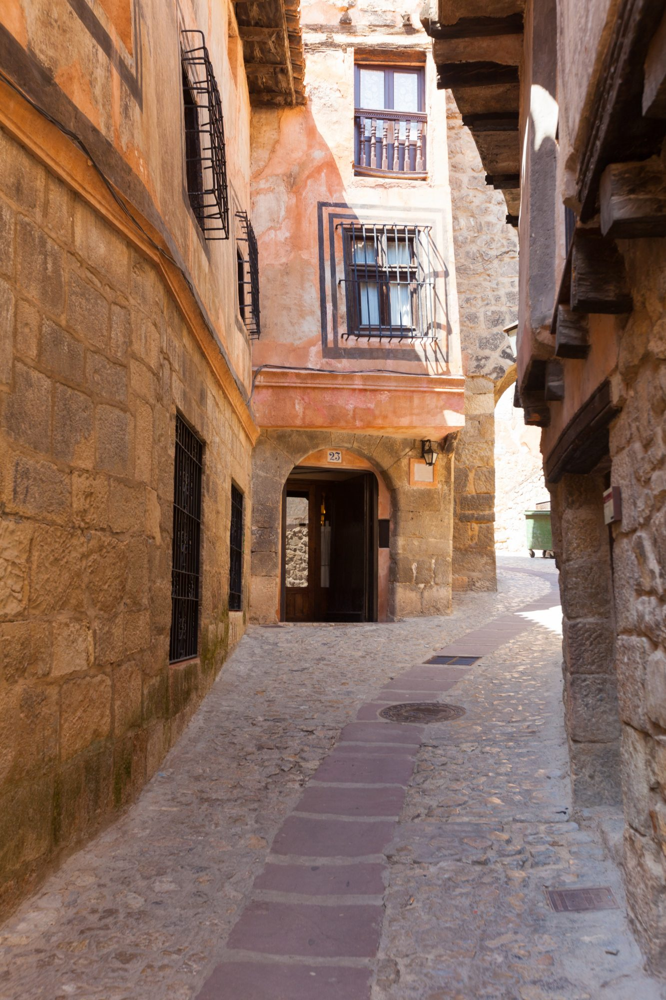

GAD/MS-0041
Cuadernos de la Aduana
Registro manuscrito del movimiento del puerto entre 1789 y 1812. Nueve tomos encuadernados en pergamino.
Sólo en sala

Sala Mendizábal · planta noble
Fundada en 1782 · Cádiz
Cuarenta y un mil volúmenes sobre el Atlántico, el comercio de Indias y las Cortes. Abierta a cualquiera que pida el carné, y gratis.
Fondos · selección del mes
El catálogo entero se consulta en línea. Esta es la parte que no se puede resumir en una ficha: lo que sólo existe en esta casa.
Registro manuscrito del movimiento del puerto entre 1789 y 1812. Nueve tomos encuadernados en pergamino.
Ciento ochenta cartas náuticas grabadas, la más antigua de 1703. Digitalizadas en su totalidad.
La colección completa de los periódicos publicados durante el sitio, incluidos los tres que duraron un solo número.
Biblioteca personal de un armador del siglo XIX, donada entera en 1968 y conservada tal como se recibió.
Cuatrocientas partituras manuscritas de las funciones del teatro entre 1840 y 1890, con las anotaciones de los músicos al margen.
Para consultar fondo antiguo hay que pedir cita con cuarenta y ocho horas de antelación. La sala de lectura general no la necesita: se entra con el carné.
El edificio
La fundó un consulado de comerciantes para sus propios hijos. Sobrevivió a un sitio, a dos incendios y a una guerra, y en todo ese tiempo sólo cerró por obras.
El Consulado de Cargadores compra la casa y la abre a sus socios con dos mil libros.
Durante el asedio francés la sala se usa como archivo de las Cortes. No se pierde un solo tomo.
Deja de ser privada. Cualquier vecino que sepa leer puede pedir el carné.
Se pierde el ala norte y un tercio de la prensa del siglo XIX. Lo demás se salva a mano.
Llegan los diez mil volúmenes de Ruiz de Alarcón y con ellos la segunda planta de estanterías.
Empieza la digitalización del fondo antiguo. Las cartas náuticas son lo primero.
Cómo se usa
No hay que ser investigador ni estudiante ni vecino de Cádiz. Hace falta un documento de identidad y una dirección donde mandar los avisos de devolución.
Se pide en el mostrador de la entrada con el documento. Sale al momento y no caduca mientras se use al menos una vez al año.
Ciento doce plazas con lámpara y enchufe. Se entra sin cita, se pide el libro en el mostrador y llega a la mesa en menos de quince minutos.
Con cita de cuarenta y ocho horas. Se consulta en una sala aparte, con guantes y sin bolígrafo, y hay un bibliotecario al lado todo el tiempo.
Lo digital
El fondo antiguo se está digitalizando pieza por pieza y se sube abierto, sin registro y a resolución completa. Las cartas náuticas ya están enteras.

Agenda · abril 2026
Una hora por las salas que no se ven desde la general, con el conservador. Doce plazas, con carné.
Charla sobre la colección de cartografía y cómo se leía un mapa cuando el mapa era lo único que había.
Se leen tres periódicos de 1811 tal como salieron, con sus erratas. Dura lo que dura un periódico.
Cuatro tardes para aprender a coser un cuaderno como se cosían los de la Aduana. Se sale con el cuaderno hecho.
Antes de venir

Desde 1868, para cualquiera
Se hace en el mostrador, sale al momento y no caduca. La sala está abierta hasta las nueve.
Pedir el carné